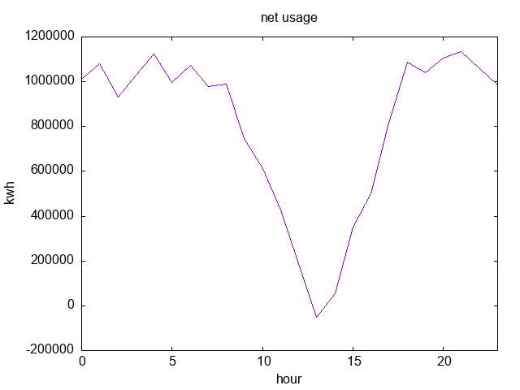

Picking a plan for electricity
I live in Oregon, and Pacific Power is my only choice for providing electricity. I put solar panels and a battery on my house a few years ago because (a) they're cool, (b) they are useful in emergencies, and (c) theoretically they will save me money in the very long-term (I calculated initially about 10–15 years to get back my investment).
Recently, Pacific Power has listed a few pilot programs and options for having a variable cost for electricity as an option. The default "schedule", as it is called, is schedule 4: a flat rate at all times, which right now is $0.11911 (USD) per kWh. This is not terrible by any means. The new options provided have different rates at different times of the year and day. In total, my options are, all in units of dollars per kwH, and excluding other costs:
- Schedule 4 (current, default): 0.11911 flat rate.
- Schedule 4 ("choice"): 0.11911 base rate, 0.06124 extra cost during "peak" hours, -0.01125 (credit) during "off-peak" hours. Peak hours are defined as: 4pm to 8pm in April through October, during weekdays and non-holidays, and 6am to 10am and 5pm to 8pm for November through March during weekdays and non-holidays. Note that these terms are poorly defined (what holidays? Are the ranges inclusive or exclusive? etc.).
- Schedule 6 ("residential time-of-use pilot"): 0.26181 peak (5pm to 9pm), 0.08121 all other times.
At a glance, knowing that I have solar generation and battery backup, I might be tempted to switch to one of these plans. But which? How much money would I save?
Luckily, I have about a year's worth of energy usage data for my household in Prometheus, including how much I sold back to Pacific Power, so I don't have to guess.

So, I wrote a quick Python program that simulated how much each power plan would cost me: it runs through every data point, estimates about how much power was used since the last data point, and accumulates the cost according the plan rules. I ran through a few different assumptions about what were meant by the time ranges, and ignored holidays (since Pacific Power doesn't define what holidays they follow anyway), but the gist was essentially:
| Schedule | Cost |
|---|---|
| 4 | $2,295.67 |
| "Choice" | $2,367.12 |
| 6 | $2,296.90 |
Changing some of the various assumptions shifts the amounts by a few dollars, but not significantly.
With a few behavior changes, like modifying how the AC and heating in the house are used in certain seasons, it might be worth switching to one of the other schedules. But, I wanted to see what the hard numbers are for what my household's current behavior is, rather than what it could be.
tl;dr: it's not worth switching for me. It's probably worth switching for many people though, and it might be worth switching if you can be trusted to modify your own behavior consistently.